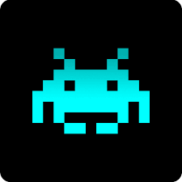

Mis Proyectos
Estos son algunos de los proyectos que he desarrollado durante mis estudios en DAM. Cada uno refleja mi evolución, mis ganas de aprender y mi enfoque en el desarrollo backend y la programación estructurada.

Space Invaders (C#)
Una versión personalizada del clásico juego. Implementado en C# con detección de colisiones, sistema de puntuación y animaciones. Ideal para practicar programación orientada a objetos.
Ver en repositorio
Página Web de Suplementación
Diseño y desarrollo de una web moderna para una tienda de suplementos deportivos. HTML, CSS, JS y un backend sencillo para gestión de productos.
Ver en repositorioGestión de Taller (Java)
Aplicación de escritorio para la gestión de coches, clientes y reparaciones. Desarrollada en Java con arquitectura modular y conexión a base de datos.
Ver en repositorio